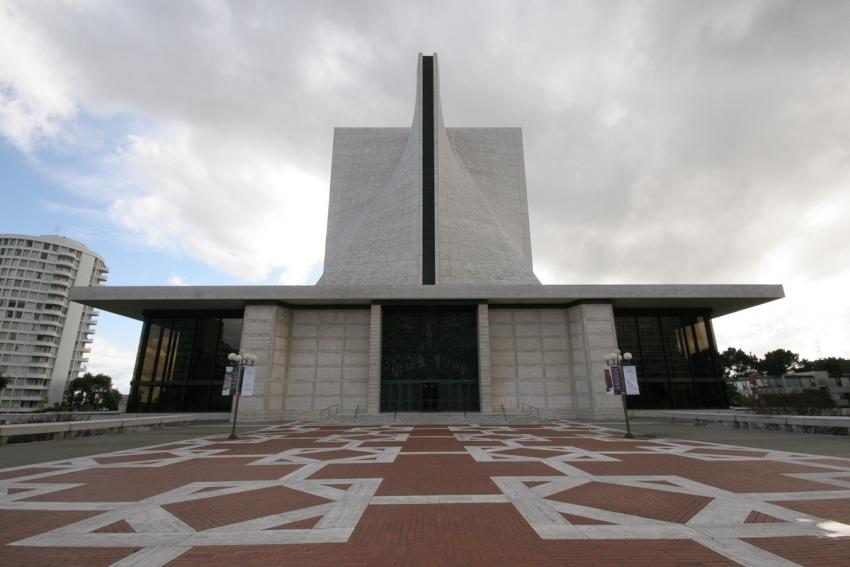

Cathedral of Saint Mary of the Assumption
Saint Mary's From Below. [1] The "dome" of Saint Mary's fuses a cross shape with a traditional dome.
Background
Cathedral of Saint Mary of the Assumption, also known as Saint Mary's Cathedral, is located in the neighborhood of Cathedral Hill in San Francisco, California. The cathedral was built to replace the previous cathedral which burnt down in 1962. The initial design team included three local architects, Angus McSweeny, Paul A. Ryan, and John Michael Lee, but in an attempt to create something more untraditional two other prominent architects were brought on, Pietro Belluschi who was then the dean of architecture at MIT and Pier-Luigi Nervi a famous Italian architect. Work on Saint Mary's started in August of 1965 and was completed in 1970. [2]
Purpose
Saint Mary's is the mother church of the Roman Catholic Archdiocese of San Fransisco, and the seat of the Archbishop of San Francisco, Reverend Salvatore J. Cordileone (Sept. 2020). Its main function is for Catholic religious ceremonies, but often hosts concerts and other events, as well as serving as a community center for the surrounding parish. [3]
The cathedral was constructed primarily out of reinforced concrete and steel with a travertine marble cladding. [4]
Grand Entrance. [5] The red brick leading up to the massive doorway creates a sense of awe.
[6]
[7]
Architectural Drawings
Academic Articles
Modernism and American Mid-20th Century Sacred Architecture
Chapter 5 of Modernism and American Mid-20th Century Sacred Architecture, by Gabrial Neri explores the design of the cathedral. The architectural design of the building is rather unique, especially its use of a reinforced concrete hyperbolic paraboloid. The genesis for this project came about after the initial designs for the cathedral were rejected and the Archbishop brought on renowned architect Peitro Belluschi, to come up with something new and unconventional. The architects went through a long experimental phase trying to get the design to work before beginning construction in 1967. A striking quote from the chapter: "How would Michelangelo have thought of this cathedral? He could not have thought of it. The design comes from geometric theories not yet proved. It could only have been conceived of today." [8]
The Anatomy of Transition: Cathedral-Building and Social Justice in San Francisco
The Anatomy of Transition: Cathedral-Building and Social Justice in San Francisco, explores the events leading up to the construction of Saint Mary’s, the design and construction process, and how it relates to social justice at the time. After the previous Saint Mary’s burned down, the Archbishop of San Francisco started a campaign to raise money for the cathedral and for the poor. Many members of the public, the press and some clergy believed that there was no need for a new cathedral, and that instead the diocese should use that money to help the poor. The Archbishop held that helping the poor and building a new cathedral were not mutually exclusive, and that they had enough funds to do both, and that the new cathedral would be home to new services to help the poor even further. [9]
Saint Mary's Illustration, by Matthew Dulworth.
[10]
Video of Interior
The most striking thing to me in this video tour is the structure's use of lighting. Most of the light inside the cathedral is natural lighting. There are large windows in the background behind the alter that let in most of the general lighting, while the more important bits of the structure, like the alter, and the massive cross in the ceiling are highlighted with stained glass. It all works together to bring about a very reverent atmosphere.
Non-Academic Articles
Belluschi at his most breathtaking: visiting Saint Mary's Cathedral in San Francisco
The author of the article writes that in San Francisco the cathedral is often derided for resembling an internal rotor of a washing machine. The cross structure of the church looks similar to the rotor of a washing machine in that they are both vaguely cross shaped, but I don’t think that this is enough to warrant the derision. [11]
The Understated and Awe Inspiring Churches of Peitro Belluschi
One thing I learned from this article is that Peitro Belluschi is actually a very well known architect when it comes to building churches, particularly in Oregon. Many of the styles that he implemented in Saint Mary's are present in much of his other work. For example he often utilizes muted interior lighting with bright natural light in key locations to emphasize their importance. As is evident in Saint Mary's one of Bulluschi's architectural maxims is "simplicity of the saint versus the simplicity of the fool." meaning that he tried to keep his churches free of superfluous adornment while preserving the sacred. [12]My Experiences
I visited Saint Mary's Cathedral during a road trip in california around 10 years ago. My memory of the event is mostly hazy, but the one thing that stood out to me was how different the church was from the ones at home in Houston. Saint Mary's was modern, geometric, and unfamiliar, but at the same time, quite beautiful.
Description

Google Earth Image of Saint Mary's [13]
Location
Saint Mary's Cathedral is located in the heart of San Francisco. Most of it's neighbors are apartment complexes, with some medical buildings and sports fields as well. The unusual shape of the building combined with the red courtyard really make it pop out compared to it's surroundings.
Photo Album
[14]
[15]
[16]
[17]
[18]
[19]
[20]
Photo Notes
An important thing to note between all of these photos is how the architect uses concrete and geometry to both provide a sense of power, and to show off the technology that makes the building possible, how the structure supports its own weight.
{kind=link}